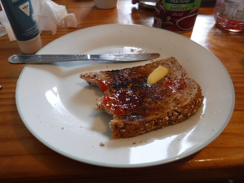
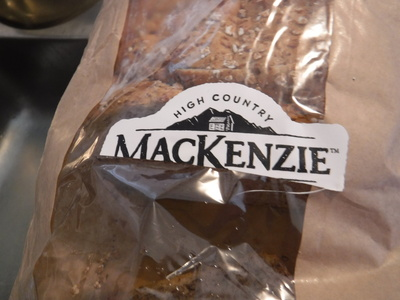
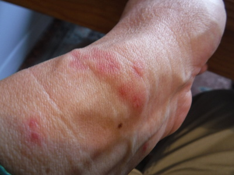
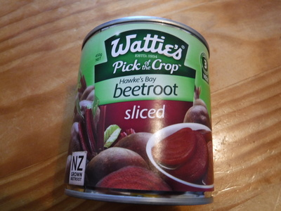
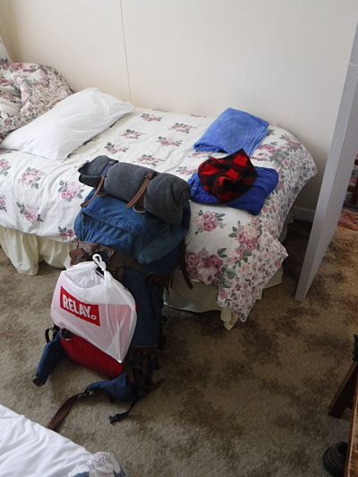
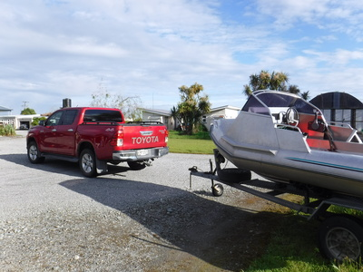
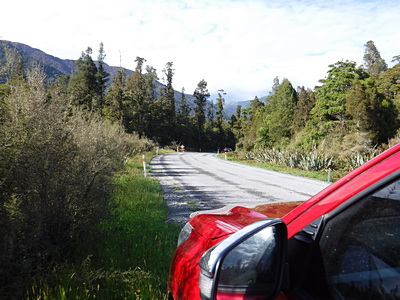
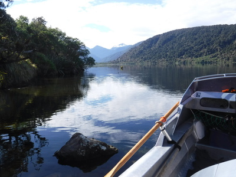
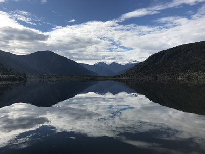

釣行日誌 ＮＺ編 「一期一会の旅：A Sentimental Journey」
湖にて
11/25(SUN)-1
今朝は6時半に起きた。ディーンとの釣行最終日だ。すぐにいつもの朝食。今朝も粗挽き黒パンのトーストにバターを塗り、グレースさんお手製のイチゴジャムにて美味しくいただく。食パンは、High Country MacKenzie というブランドであった。


食べつつふと手首を見ると、今回は少なかったとは言え、手首の内側10カ所ほどがサンドフライに噛まれており、その痕がかゆい。ちょうどシャツの袖と手袋の隙間を狙われたのだ。まあこれでも免疫が出来たのか、昔ほどひどく腫れることは無くなったが。今度来る時は、夏に女の人が腕から手首まではめる日焼け止めを持って来ようと思った。

朝食が済むと、いつものようにディーンが手早くサンドイッチを作り始める。スライスされたビートルートの濃い赤紫色が食欲をそそる。

お弁当が出来上がったら今度は荷物のパッキングだ。今日でこのロッジを出てホキティカへ戻るので、忘れ物の無いように部屋を片付けて、今日必要な釣り具以外は全部バックパックに仕舞う。

時刻は朝８時過ぎ、ロッジで４泊分の支払いを済ませていると、ディーンが駐車場脇の空き地に停めておいたボートトレーラーを牽引する支度を始めていた。

今回、お客は僕１人なのにわざわざボートを遠路はるばるホキティカから引っ張って来てくれて、いささか恐縮、感謝した。今日はディーンが、昨日の川の淵での狂乱的な鱒のボイルをぜひ撮影したいと言うことで、騒ぎが始まるお昼時までは湖で少し釣って、その後例のポイントへ移動としようというスケジュールとなった。
湖へ向かう途中、ディーンは道路脇にトヨタを停め、しばし野鳥 Tui の姿を追って撮影を試みた。周囲の繁みから美しい鳴き声が聞こえて来たが、残念ながら姿は見えなかった。

９時半に湖に着き、ボートランプからそろそろとボートを湖面に浮かべる。車をバックさせながらトレーラーを思うところに動かして行くのはかなり難しいだろうなと思われた。

「さっき見たら北側の駐車場に空のボートトレーラーが停まっていたから先客が居るようだ。この湖で１番のポイントへ急ごう！」
そう言ってディーンがボートのエンジンをふかす。空は快晴、風は無く、湖面は鏡のようだ。絶好のサイトフィッシング日和である。

最も熱い！と思われるポイントに着いてエンジンを止め、ディーンがオールで漕ぎ始める。僕はタックルをセットする。今日は僕のフライボックスから黒いウーリーバガーを選んで結ぶ。さっそくディーンが浅場をクルージングしている１尾を見つけた。相変わらずの悲惨なキャストと長いリーダーに苦しみつつ、なんとかストリーマーを投げ込むが、思ったところには落ちずに鱒を脅かしてしまった。（泣）
ディーンは顔を曇らせることも無く、さっさと次を探し始め、すぐに２尾目を見つけてくれた。光線の具合も良く、水は透明だが、彼の指示無しでは到底見つけられないだろう。今度は魚の近くにフライが着水した。しかしフライがブラウンのお気に召さなかったらしく、プイと横を向いて逃げられた。
湖や河口部のラグーンといった止水域でのサイトフィッシングでは、川の流れを釣る時と違い、鱒がポイントに定位することなく自由に右へ左へと泳ぎ回る。ゆえに、移動する鱒の鼻先1.5mほどのスポットにフライをキャストするのはとても難しい。川とはまた違った面白さもあるのだが、僕は湖のサイトフィッシングは少々苦手だった。しかしそんなことも言ってられない。さて次だ。（笑）
釣行日誌ＮＺ編 目次へ
サイトマップ
ホームへ
お問い合わせ